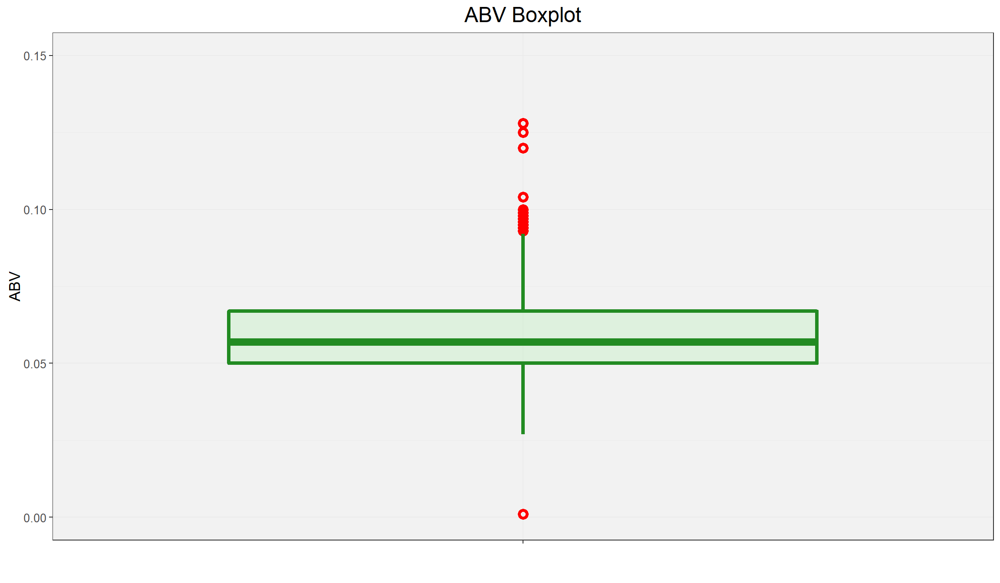
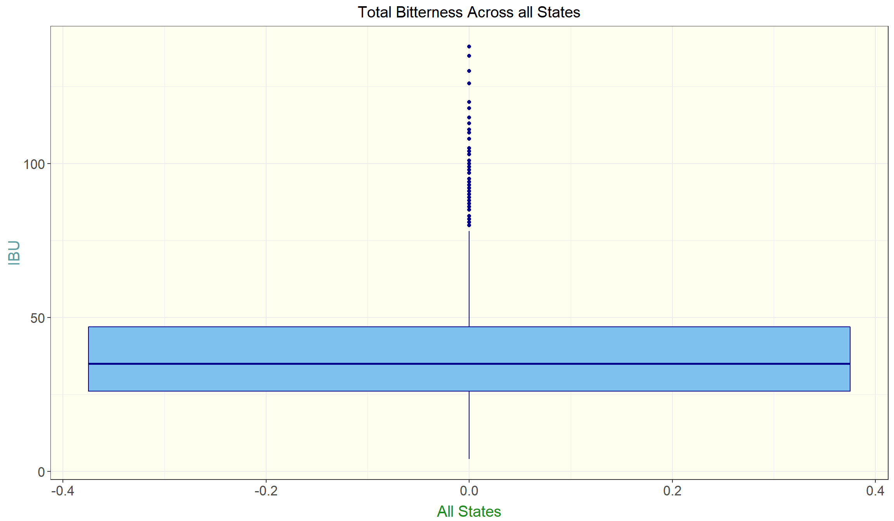

DDS Case Study 1
Daanesh Ibrahim
January 24, 2019
After carefully reviewing the beer and brewery data provided by your company, our group was able to discover what we think is helpful information in choosing which beer type to offer within specific US states. In our analysis we primarily reviewed the alcohol by volume (ABV) and international bitterness unit (IBU) for each beer type within each state. In part of our research we were able to find that if your company wanted to offer a more bitter beer (higher IBU), Maine should be considered as the first state to introduce it since the it has the highest median IBU value in the US. In addition, if you instead wanted to release a lighter beer, Utah would probably be the best place to introduce this product since their median alcohol by volume (ABV) is the lowest in the US.
Below you can find our analysis regarding the beer & brewery data provided.
library(tidyverse)## -- Attaching packages --------------- tidyverse 1.2.1 --## v ggplot2 3.2.1 v purrr 0.3.3
## v tibble 2.1.3 v dplyr 0.8.3
## v tidyr 1.0.0 v stringr 1.4.0
## v readr 1.3.1 v forcats 0.4.0## Warning: package 'ggplot2' was built under R version 3.6.2## -- Conflicts ------------------ tidyverse_conflicts() --
## x dplyr::filter() masks stats::filter()
## x dplyr::lag() masks stats::lag()library(ggplot2)
library(reshape2)##
## Attaching package: 'reshape2'## The following object is masked from 'package:tidyr':
##
## smithslibrary(dplyr)
library(na.tools)## Warning: package 'na.tools' was built under R version 3.6.2library(sqldf)## Loading required package: gsubfn## Loading required package: proto## Loading required package: RSQLitelibrary(RCurl)## Loading required package: bitops##
## Attaching package: 'RCurl'## The following object is masked from 'package:tidyr':
##
## completelibrary(e1071)
library(class)
library(caret)## Loading required package: lattice##
## Attaching package: 'caret'## The following object is masked from 'package:purrr':
##
## liftlibrary(usmap)## Warning: package 'usmap' was built under R version 3.6.2#Set working directory
setwd("C:/Users/e005108/Documents/DS/DataScience/MDS-6306-Doing-Data-Science-Fall-2019-Master/Unit 8 and 9 Case Study 1")
# Read CSV into R
beerData <- read.csv(file="Beers.csv", header=TRUE, sep=",")
breweryData <- read.csv(file="Breweries.csv", header=TRUE, sep=",")1. How many breweries are present in each state?
The image below displays the number of breweries present in each state. Colorado has highest the amount of breweries with 47. Also, the following states are tied for having the the lowest amount of breweries with 1: West Virginia, South Dakota, North Dakota, & the District of Columbia.
#count of breweries per state
StateBrewCnt <- sqldf("select State, count(*) as Brewery_Count
from breweryData
group by State
order by Brewery_Count desc")
ggplot(data=StateBrewCnt, aes(x=reorder(State,Brewery_Count),y=Brewery_Count,fill=State)) +
geom_bar(stat="identity", show.legend = F) +
ggtitle("Count of Breweries Per State") +
coord_flip() +
geom_text(data = StateBrewCnt,
aes(y = Brewery_Count, label = substr(Brewery_Count,0,5)), size = 3,
vjust = .35, hjust=-.4) +
xlab("State") +
ylab("Brewery Count") +
theme(
panel.background = element_rect(fill = 'ivory1'),
plot.title = element_text(hjust = 0.5, size=15),
axis.text.y = element_text(size=8),
axis.title.x = element_text(color="forestgreen", vjust=-0.35, size=15),
axis.title.y = element_text(color="cadetblue" , vjust=0.35, size=15)
)2. Merge beer data with the breweries data. Print the first 6 observations and the last six observations to check the merged file.
To further our analysis, we have combined the brewery data set with the beer data set. Within the image below, we have listed the first 6 rows & last 6 rows of the combined data.
#Merging the two datasets based on Brewery ID
beersAndPubs <- merge(beerData,breweryData, by.x = "Brewery_id", by.y = "Brew_ID", all.x = TRUE)
names(beersAndPubs) <- c("Brewery_ID","Beer_Name","Beer_ID","ABV","IBU","Style","Ounces","Brewery_Name","City","State")
#Display first 6 rows and last 6 rows
head(beersAndPubs, 6)## Brewery_ID Beer_Name Beer_ID ABV IBU
## 1 1 Get Together 2692 0.045 50
## 2 1 Maggie's Leap 2691 0.049 26
## 3 1 Wall's End 2690 0.048 19
## 4 1 Pumpion 2689 0.060 38
## 5 1 Stronghold 2688 0.060 25
## 6 1 Parapet ESB 2687 0.056 47
## Style Ounces Brewery_Name
## 1 American IPA 16 NorthGate Brewing
## 2 Milk / Sweet Stout 16 NorthGate Brewing
## 3 English Brown Ale 16 NorthGate Brewing
## 4 Pumpkin Ale 16 NorthGate Brewing
## 5 American Porter 16 NorthGate Brewing
## 6 Extra Special / Strong Bitter (ESB) 16 NorthGate Brewing
## City State
## 1 Minneapolis MN
## 2 Minneapolis MN
## 3 Minneapolis MN
## 4 Minneapolis MN
## 5 Minneapolis MN
## 6 Minneapolis MNtail(beersAndPubs,6)## Brewery_ID Beer_Name Beer_ID ABV IBU
## 2405 556 Pilsner Ukiah 98 0.055 NA
## 2406 557 Heinnieweisse Weissebier 52 0.049 NA
## 2407 557 Snapperhead IPA 51 0.068 NA
## 2408 557 Moo Thunder Stout 50 0.049 NA
## 2409 557 Porkslap Pale Ale 49 0.043 NA
## 2410 558 Urban Wilderness Pale Ale 30 0.049 NA
## Style Ounces Brewery_Name
## 2405 German Pilsener 12 Ukiah Brewing Company
## 2406 Hefeweizen 12 Butternuts Beer and Ale
## 2407 American IPA 12 Butternuts Beer and Ale
## 2408 Milk / Sweet Stout 12 Butternuts Beer and Ale
## 2409 American Pale Ale (APA) 12 Butternuts Beer and Ale
## 2410 English Pale Ale 12 Sleeping Lady Brewing Company
## City State
## 2405 Ukiah CA
## 2406 Garrattsville NY
## 2407 Garrattsville NY
## 2408 Garrattsville NY
## 2409 Garrattsville NY
## 2410 Anchorage AK3. Report the number of NA’s in each column.
After reviewing the combined data set, our group has identified a number of NAs (missing values) within a few columns. IBU and ABV were the only columns that had missing values. IBU had 1005/2410 rows of missing values (41.7%) and ABV had 62/2410 rows of missing values (2.6%). In order to address these NA’s, we could remove these rows from the data set or we could potentially replace these values. Our opinion was to not exclude potentially vital data in our research (if we are missing ABV it does not mean we are missing IBU and vice versa) and we have already determined no other variables are missing data.
We could use the median or mean in order to replace these values. Mean would be a good choice if there are no outliers present, because the mean is very much influenced by outliers in the data. The Median would be the better choice if there were outliers in the data, as this value is resistant against outliers. In order to see if there are outliers present for ABV and IBU, a boxplot was created for each. Boxplots map out if any of the values fall out of the range for the plot based on the full amount of data. Anything that falls out of this range would then be labeled as outliers.
As you can see from the boxplots below, there are outliers present for both ABV and IBU.
Therefore I believe that the best course of action is to replace the missing values for ABV and IBU in each state by the median of each state. I believe if we used the style of the beer instead to fill these values we would be making assumptions of the IBU and ABV based on the style which I do not want to do. I want to simply fill these values with their state medians so when we analyze this data at the state level it wouldn’t affect our overall results as much. This was my judgement.
There is one State that did not have and data for IBU, South Dakota, so the national median (35) was used to replace the NA’s for this state.
#Gather count of NA
na_count <-sapply(beersAndPubs,
function(cnt) sum(length(which(is.na(cnt)))))
# Collect the percent of all NA values representative of the total count of all rows in the data set
percentNA <- ((na_count/(nrow(beersAndPubs)))*100)
percentNA <- paste0(round(percentNA, digits = 1),"%")
# Create a count of NAs with percents in parentheses
percentCountNA <- paste(na_count," (",percentNA,")",sep="")
#Convert count to dataframe
na_df <- data.frame(na_count)
#Add new variable to list category names
na_df$categories <- c("Brewery_ID","Beer_Name","Beer_ID","ABV","IBU","Style","Ounces","Brewery_Name","City","State")
#plot the count data
theme_set(theme_bw())
ggplot(data=na_df, aes(x=categories, y=na_count)) +
geom_bar(stat="identity", fill="tomato3") +
ggtitle("Count of NAs per Category") +
coord_flip() +
geom_text(
data = na_df,
aes(y = na_count,
label = percentCountNA
),
size = 4,
vjust = .35, hjust=-.01) +
ylim(0,1300) +
theme(
panel.background = element_rect(fill = 'gray95'),
axis.text.y = element_text(size=10),
axis.text.x = element_text(size=12),
axis.title.x = element_text(vjust=-0.35, size=13),
axis.title.y = element_text(vjust=0.35, hjust=0.57, size=13),
plot.title = element_text(hjust = 0.5, size=20)
) +
ylab("Count") +
xlab("Categories")theme_set(theme_bw())
ggplot(data=beersAndPubs,aes(x="",y=IBU,fill=IBU)) + geom_boxplot(color="blue",alpha=0.2,size=1.5,fill="steelblue2",outlier.colour = "red", outlier.shape = 1,outlier.size = 2, outlier.alpha=1,outlier.stroke = 2) +
ggtitle("IBU Boxplot") +
ylim(0,150) +
theme(
panel.background = element_rect(fill = 'gray95'),
axis.text.y = element_text(size=10),
axis.text.x = element_text(size=12),
axis.title.x = element_text(vjust=-0.35, size=13),
axis.title.y = element_text(vjust=0.35, size=13),
plot.title = element_text(hjust = 0.5, size=18)
) +
ylab("IBU") +
xlab("")## Warning: Removed 1005 rows containing non-finite values (stat_boxplot).ggplot(data=beersAndPubs,aes(x="",y=ABV,fill=ABV)) + geom_boxplot(color="forestgreen",alpha=0.2,size=1.5,fill="lightgreen",outlier.colour = "red", outlier.shape = 1,outlier.size = 2, outlier.alpha=1,outlier.stroke = 2) +
ggtitle("ABV Boxplot") +
ylim(0.00,0.15) +
theme(
panel.background = element_rect(fill = 'gray95'),
axis.text.y = element_text(size=10),
axis.text.x = element_text(size=12),
axis.title.x = element_text(vjust=-0.35, size=13),
axis.title.y = element_text(vjust=0.35, size=13),
plot.title = element_text(hjust = 0.5, size=18)
) +
ylab("ABV") +
xlab("")## Warning: Removed 62 rows containing non-finite values (stat_boxplot).# This replaces the NA ABVs and IBUs in each state by the median of each State (not the national median)
beersAndPubs <- beersAndPubs %>% group_by(State) %>% mutate(ABV = na.median(ABV))
beersAndPubs <- beersAndPubs %>% group_by(State) %>% mutate(IBU = na.median(IBU))## Warning in na.replace(.x, .na = function(x, ...) median(x, na.rm = TRUE, :
## All values of 'x' are missing (NA).## Warning in na.replace.default(.x, .na = function(x, ...) median(x, na.rm =
## TRUE, : Replacement value is 'NA'. Returning values unchanged.# "All values of 'x' are missing (NA). Replacement value is 'NA'. Returning values unchanged" is thrown when-
# ever there is a state with no non-NA values with which to provide a median estimate. To fix this,
# these states will receive the nationwide median
beersAndPubs <- beersAndPubs %>% mutate(IBU = na.median(IBU)) %>% data.frame()## Warning in na.replace(.x, .na = function(x, ...) median(x, na.rm = TRUE, :
## All values of 'x' are missing (NA).
## Warning in na.replace(.x, .na = function(x, ...) median(x, na.rm = TRUE, :
## Replacement value is 'NA'. Returning values unchanged.# Ensuring NAs were resolved
beersAndPubs <- beersAndPubs %>% mutate(IBU = na.median(IBU)) %>% data.frame()
# creating ordered dataframe for overall medians for each state
medianABVbyState <- beersAndPubs %>% group_by(State) %>% summarise(ABV = median(ABV)) %>% data.frame()
medianABVbyState <- data.frame(medianABVbyState[order(-medianABVbyState$ABV),])
medianIBUbyState <- beersAndPubs %>% group_by(State) %>% summarise(IBU = median(IBU)) %>% data.frame()
medianIBUbyState <- data.frame(medianIBUbyState[order(-medianIBUbyState$IBU),])4. Compute the median alcohol content and international bitterness unit for each state. Plot a bar chart to compare.
The images below shows the median alcohol content (ABV) and median international bitterness unit (IBU) for each state.
Kentucky has the highest median alcohol by volume (ABV) beer while Maine has the highest median bitterness (IBU) for beer.
# ordered dataframes for collective ABVs and IBUs, by state
medianABVbyState## State ABV
## 8 DC 0.0625
## 18 KY 0.0625
## 23 MI 0.0620
## 33 NM 0.0620
## 50 WV 0.0620
## 6 CO 0.0605
## 2 AL 0.0600
## 7 CT 0.0600
## 34 NV 0.0600
## 37 OK 0.0600
## 42 SD 0.0600
## 5 CA 0.0580
## 15 IL 0.0580
## 16 IN 0.0580
## 21 MD 0.0580
## 26 MS 0.0580
## 36 OH 0.0580
## 10 FL 0.0570
## 28 NC 0.0570
## 39 PA 0.0570
## 43 TN 0.0570
## 14 ID 0.0565
## 46 VA 0.0565
## 1 AK 0.0560
## 24 MN 0.0560
## 30 NE 0.0560
## 38 OR 0.0560
## 13 IA 0.0555
## 48 WA 0.0555
## 4 AZ 0.0550
## 9 DE 0.0550
## 11 GA 0.0550
## 27 MT 0.0550
## 31 NH 0.0550
## 35 NY 0.0550
## 40 RI 0.0550
## 41 SC 0.0550
## 44 TX 0.0550
## 47 VT 0.0550
## 12 HI 0.0540
## 20 MA 0.0540
## 3 AR 0.0520
## 19 LA 0.0520
## 25 MO 0.0520
## 49 WI 0.0520
## 22 ME 0.0510
## 17 KS 0.0500
## 29 ND 0.0500
## 51 WY 0.0500
## 32 NJ 0.0460
## 45 UT 0.0400medianIBUbyState## State IBU
## 22 ME 61.0
## 50 WV 57.5
## 10 FL 55.0
## 11 GA 55.0
## 9 DE 52.0
## 33 NM 51.0
## 31 NH 48.0
## 8 DC 47.0
## 35 NY 47.0
## 1 AK 46.0
## 26 MS 45.0
## 24 MN 44.0
## 2 AL 43.0
## 5 CA 42.0
## 46 VA 42.0
## 34 NV 41.0
## 6 CO 40.0
## 27 MT 40.0
## 36 OH 40.0
## 38 OR 40.0
## 3 AR 39.0
## 14 ID 39.0
## 48 WA 38.0
## 43 TN 37.0
## 20 MA 35.0
## 23 MI 35.0
## 30 NE 35.0
## 37 OK 35.0
## 42 SD 35.0
## 32 NJ 34.5
## 45 UT 34.0
## 16 IN 33.0
## 28 NC 33.0
## 44 TX 33.0
## 29 ND 32.0
## 18 KY 31.0
## 19 LA 31.0
## 15 IL 30.0
## 39 PA 30.0
## 41 SC 30.0
## 47 VT 30.0
## 7 CT 29.0
## 21 MD 29.0
## 13 IA 26.0
## 25 MO 24.0
## 40 RI 24.0
## 12 HI 22.0
## 51 WY 21.0
## 4 AZ 20.0
## 17 KS 20.0
## 49 WI 19.0###Steps below are to identify median ABV per style and update our model dataframe values accordingly###
#Separate IBU and Style into separate dataframe
abv_style_df <- beersAndPubs[,c("ABV","Style")]
#Calculate median IBU per Style. Also, rename column headers.
mn_abv <- aggregate(abv_style_df$ABV, by=list(abv_style_df$Style), FUN=median)
names(mn_abv) <- c("Style", "ABV")
#Plot Median ABV Per State
ggplot(data=medianABVbyState, aes(x=reorder(State,ABV),y=ABV,fill=State)) +
geom_bar(stat="identity", show.legend = F) +
ggtitle("Median ABV Per State") +
coord_flip() +
geom_text(
data = medianABVbyState,
aes(y = ABV, label = substr(ABV,0,6)), size = 3,
vjust = .35, hjust=-.4) +
ylim(0,0.09) +
xlab("State") +
theme(
panel.background = element_rect(fill = 'ivory1'),
plot.title = element_text(hjust = 0.5, size=15),
axis.text.y = element_text(size=8),
axis.title.x = element_text(color="forestgreen", vjust=-0.35, size=15),
axis.title.y = element_text(color="cadetblue" , vjust=0.35, size=15)
)#Plot Median IBU Per State
ggplot(data=medianIBUbyState, aes(x=reorder(State,IBU),y=IBU,fill=State)) +
geom_bar(stat="identity", show.legend = F) +
ggtitle("Median IBU Per State") +
coord_flip() +
geom_text(
data = medianIBUbyState,
aes(y = IBU, label = substr(IBU,0,5)), size = 3,
vjust = .35, hjust=-.4
) +
xlab("State")+
theme(
panel.background = element_rect(fill = 'ivory1'),
plot.title = element_text(hjust = 0.5, size=15),
axis.text.y = element_text(size=8),
axis.title.x = element_text(color="forestgreen", vjust=-0.35, size=15),
axis.title.y = element_text(color="cadetblue" , vjust=0.35, size=15)
)5. Which state has the maximum alcohol content (ABV) beer? Which state has the most bitter (IBU) beer?
Colorado has the maximum alcohol content (ABV) for all of the states and Oregon has the most bitter (IBU) beer.
# creating ordered dataframe for Maximums for each state
maxABVbyState <- beersAndPubs %>% group_by(State) %>% summarise(ABV = max(ABV)) %>% data.frame()
maxABVbyState <- data.frame(maxABVbyState[order(-maxABVbyState$ABV),])
maxIBUbyState <- beersAndPubs %>% group_by(State) %>% summarise(IBU = max(IBU)) %>% data.frame()
maxIBUbyState <- data.frame(maxIBUbyState[order(-maxIBUbyState$IBU),])
#Plot Max ABV Per State
ggplot(data=maxABVbyState, aes(x=reorder(State,ABV),y=ABV,fill=State)) +
geom_bar(stat="identity", show.legend = F) +
ggtitle("Maximum ABV Per State") +
coord_flip() +
geom_text(
data = maxABVbyState,
aes(y = ABV, label = substr(ABV,0,6)), size = 3,
vjust = .35, hjust=-.4) +
ylim(0,0.150) +
xlab("State") +
theme(
panel.background = element_rect(fill = 'ivory1'),
plot.title = element_text(hjust = 0.5, size=15),
axis.text.y = element_text(size=8),
axis.title.x = element_text(color="forestgreen", vjust=-0.35, size=15),
axis.title.y = element_text(color="cadetblue" , vjust=0.35, size=15)
)#Plot Max IBU Per State
ggplot(data=maxIBUbyState, aes(x=reorder(State,IBU),y=IBU,fill=State)) +
geom_bar(stat="identity", show.legend = F) +
ggtitle("Maximum IBU Per State") +
coord_flip() +
geom_text(
data = maxIBUbyState,
aes(y = IBU, label = substr(IBU,0,5)), size = 3,
vjust = .35, hjust=-.4
) +
xlab("State")+
theme(
panel.background = element_rect(fill = 'ivory1'),
plot.title = element_text(hjust = 0.5, size=15),
axis.text.y = element_text(size=8),
axis.title.x = element_text(color="forestgreen", vjust=-0.35, size=15),
axis.title.y = element_text(color="cadetblue" , vjust=0.35, size=15)
)6. Summary statistics for the ABV variable.
The images below display the summary stastics associated to the ABV variable.
If we look at just summary statistic values and boxplot for ABV, we can see that the box and whiskers portion is fairly evenly spread, however there are outliers present on both ends of the whiskers, specifically the majority of them being above the highest whisker. This confirms what I see in the frequency plots below that which is described below.
Looking at the frequency plot of the ABV, the peak freqency for ABV appears to occur where ABV = 0.049, however the mean which is also plotted on the graph is shown to be 0.06. This would tell us that though there are many more values in the dataset that are less than the mean, there are higher values of ABV greater than the mean of 0.06 that are affecting the overall mean. This gives us more evidence of the outliers present for ABV that are higher than normal according to the rest of the values.
If we look at the ABV boxplots by state, we will see many states that have outliers present. What’s important to see here is the shape of the box portion of the boxplots, which tells us how normalized our spread of data is per state. If the median (horizontal line in the box) is more in the middle of the box, we can determine the ABV for that state is more evenly spread and therefore more reliable. As we deemed earlier Colorado is shown to have the highest value of ABV, but on this graph is shown as an outlier. This tells us that making decisions based on the highest value or max value of a state is not wise, but to look at the medians of the states instead. This is a better judgement of the overall ABV for a state.
summary(beersAndPubs$ABV)## Min. 1st Qu. Median Mean 3rd Qu. Max.
## 0.00100 0.05000 0.05700 0.05973 0.06700 0.12800ggplot(data=beersAndPubs,aes(x="",y=ABV,fill=ABV)) + geom_boxplot(color="forestgreen",alpha=0.2,size=1.5,fill="lightgreen",outlier.colour = "red", outlier.shape = 1,outlier.size = 2, outlier.alpha=1,outlier.stroke = 2) +
ggtitle("ABV Boxplot") +
ylim(0.00,0.15) +
theme(
panel.background = element_rect(fill = 'gray95'),
axis.text.y = element_text(size=10),
axis.text.x = element_text(size=12),
axis.title.x = element_text(vjust=-0.35, size=13),
axis.title.y = element_text(vjust=0.35, size=13),
plot.title = element_text(hjust = 0.5, size=18)
) +
ylab("ABV") +
xlab("")
# Frequency distribution for IBU
ggplot(na.omit(beersAndPubs), aes(x=IBU)) +
geom_freqpoly(color="darkblue", fill="skyblue2") +
geom_vline(aes(xintercept=mean(IBU)),
color="blue", linetype="dashed", size=1) +
geom_text(aes(x=mean(IBU), label=round(mean(IBU), digits=2), y=0.04, hjust = -0.5), colour="blue", angle=0) +
theme(
panel.background = element_rect(fill = 'ivory1'),
axis.text.y = element_text(size=13),
axis.text.x = element_text(size=13),
axis.title.x = element_text(color="forestgreen", vjust=-0.35, size=15),
axis.title.y = element_text(color="cadetblue" , vjust=0.35, size=15),
plot.title = element_text(hjust = 0.5, size=15)
) +
ggtitle("Total Bitterness Frequency Across all States") +
ylab("Frequency")## Warning: Ignoring unknown parameters: fill## `stat_bin()` using `bins = 30`. Pick better value with `binwidth`.# Frequency distribution for ABV
ggplot(na.omit(beersAndPubs), aes(x=ABV)) +
geom_freqpoly(color="darkblue", fill="skyblue2") +
geom_vline(aes(xintercept=mean(ABV)),
color="blue", linetype="dashed", size=1) +
geom_text(aes(x=mean(ABV), label=round(mean(ABV), digits=2), y=40, hjust = -0.6), colour="blue", angle=0) +
theme(
panel.background = element_rect(fill = 'ivory1'),
plot.title = element_text(hjust = 0.5, size=15),
axis.text.y = element_text(size=13),
axis.text.x = element_text(size=13),
axis.title.x = element_text(color="forestgreen", vjust=-0.35, size=15),
axis.title.y = element_text(color="cadetblue" , vjust=0.35, size=15)
) +
ggtitle("Total Alcohol by Volume Frequency Across all States") +
ylab("Frequency")## Warning: Ignoring unknown parameters: fill## `stat_bin()` using `bins = 30`. Pick better value with `binwidth`.
### Boxplots
# ABV by State
ggplot(data=na.omit(beersAndPubs), aes(y=ABV,x=State)) +
geom_boxplot(stat="boxplot", fill="skyblue2", color="darkblue") +
theme(
panel.background = element_rect(fill = 'ivory1'),
plot.title = element_text(hjust = 0.5, size=15),
axis.text.y = element_text(size=13),
axis.title.x = element_text(color="forestgreen", vjust=-0.35, size=15),
axis.title.y = element_text(color="cadetblue" , vjust=0.35, size=15)
) +
ggtitle("Total Alcohol by Volume by State") +
xlab("State")# ABV Nationally
ggplot(data=na.omit(beersAndPubs), aes(y=ABV)) +
geom_boxplot(stat="boxplot", fill="skyblue2", color="darkblue") +
theme(
panel.background = element_rect(fill = 'ivory1'),
plot.title = element_text(hjust = 0.5, size=15),
axis.text.y = element_text(size=13),
axis.text.x = element_text(size=13),
axis.title.x = element_text(color="forestgreen", vjust=-0.35, size=15),
axis.title.y = element_text(color="cadetblue" , vjust=0.35, size=15)
) +
ggtitle("Total Alcohol by Volume Across all States") +
xlab("All States")
# IBU by State
ggplot(data=na.omit(beersAndPubs), aes(y=IBU,x=State)) +
geom_boxplot(stat="boxplot", fill="skyblue2", color="darkblue") +
theme(
panel.background = element_rect(fill = 'ivory1'),
plot.title = element_text(hjust = 0.5, size=15),
axis.text.y = element_text(size=13),
axis.title.x = element_text(color="forestgreen", vjust=-0.35, size=15),
axis.title.y = element_text(color="cadetblue" , vjust=0.35, size=15)
) +
ggtitle("Total Bitterness by State") +
xlab("State")# IBU Nationally
ggplot(data=na.omit(beersAndPubs), aes(y=IBU)) +
geom_boxplot(stat="boxplot", fill="skyblue2", color="darkblue") +
theme(
panel.background = element_rect(fill = 'ivory1'),
plot.title = element_text(hjust = 0.5, size=15),
axis.text.y = element_text(size=13),
axis.text.x = element_text(size=13),
axis.title.x = element_text(color="forestgreen", vjust=-0.35, size=15),
axis.title.y = element_text(color="cadetblue" , vjust=0.35, size=15)
) +
ggtitle("Total Bitterness Across all States") +
xlab("All States")
7. Is there an apparent relationship between the bitterness of the beer and its alcoholic content? Draw a scatter plot.
After reviewing a scatterplot comparing the Total Alochol by Volume vs Bitterness, there is a medium positive correlation between the two factors. As you can see within the image below, the slope within the blue simple linear regression line is positive (R = 0.498), thus confirming there is a relationship between the bitterness of the beer and its alcoholic content. Our R-Squared tells us further that 23.9% of the variation in ABV values can be determined by variation of IBU values in this model. In conclusion there is a relationship, but it is not very strong.
#plot of IBU vs ABV with simple linear regression line
ggplot(beersAndPubs, aes(x=IBU, y=ABV, fill = IBU)) +
geom_point(size=3, shape=21) +
geom_smooth(method=lm, se=FALSE) +
annotate(x=135, y=0.11,
label=paste("R = ", round(cor(beersAndPubs$IBU, beersAndPubs$ABV),3)),
geom="text", size=5, color = "steelblue") +
annotate(x=135, y=0.10,
label=paste("R2 = ", round(cor(beersAndPubs$IBU, beersAndPubs$ABV) * cor(beersAndPubs$IBU, beersAndPubs$ABV),3)),
geom="text", size=5, color = "steelblue") +
theme(
panel.background = element_rect(fill = 'ivory1'),
plot.title = element_text(hjust = 0.5),
legend.position = "none",
axis.text.x = element_text(size=13),
axis.text.y = element_text(size=13),
axis.title.x = element_text(color="forestgreen", vjust=-0.35, size=15),
axis.title.y = element_text(color="cadetblue" , vjust=0.35, size=15)
) +
ggtitle("Total Alcohol by Volume vs. Bitterness Correlation")cor(beersAndPubs$IBU, beersAndPubs$ABV)## [1] 0.4889897mean(beersAndPubs$IBU)## [1] 39.79419mean(beersAndPubs$ABV)## [1] 0.059731548. Budweiser would also like to investigate the difference with respect to IBU and ABV between IPAs (India Pale Ales) and other types of Ale (any beer with “Ale” in its name other than IPA). You decide to use KNN classification to investigate this relationship. Provide statistical evidence one way or the other. You can of course assume your audience is comfortable with percentages … KNN is very easy to understand conceptually.
We have decided to run a KNN model in order to figure out the relationship between IPAs and other Ale’s with respect to ABV and IBU. This will tell us that, using only ABV and IBU, can the model predict whether the beer is an IPA or another type of Ale?
After training the model and figuring out the best k (number of nearest neighbors used to calculate the estimate) which would have the best accuracy, we have determined this to be when k=5 giving us an accuracy of about 79%.
When we apply this model to the data for all Ales and IPAs, we find an overall success rate of 80.3%. However digging deeper, we see that the success rate for just predicting Ales is 88.1% while the success rate for predicting IPAs is 67.1%. This would prove that IBU and ABV have a better chance of predicting Ales than it does with IPAs, meaning a better relationship with Ales.
#Create Beer_Category variable to classify Ales and IPAs
beersAndPubs$Beer_Category <- ifelse(str_detect(beersAndPubs$Style, "IPA"), 'IPA', ifelse(str_detect(beersAndPubs$Style, "Ale"),'Ale','Other'))
#Filter the data to limit it to IPA and Ale beer categories, and also select only the columns required for analysis
beersAndPubsknn <- beersAndPubs %>% filter(Beer_Category %in% c("IPA", "Ale")) %>% select(Beer_ID,Beer_Name, ABV,IBU, Beer_Category)
#Create a placeholder for Accuracy
Acc= matrix(nrow=100, ncol=100)
#Build knn Model
#For loop to create 100 different training and test data sets
for(seed in 1:100) {
set.seed(seed)
trainIndices = sample(seq(1:length(beersAndPubsknn$Beer_Category)), round(.7*length(beersAndPubsknn$Beer_Category)))
trainbeersAndPubsknn = beersAndPubsknn[trainIndices,]
testbeersAndPubsknn = beersAndPubsknn[-trainIndices,]
#For loop to run KNN model for k=1-100
for( i in 1:100) {
knn1 <- knn(trainbeersAndPubsknn[, c(3,4)],testbeersAndPubsknn[, c(3,4)], trainbeersAndPubsknn$Beer_Category, k = i )
t_knn <- table(knn1,testbeersAndPubsknn$Beer_Category )
#Create confusion matrix
Cm_Knn <- confusionMatrix(t_knn)
#Captures Accuracy
Acc[seed,i] = Cm_Knn$overall[1]
}
}
#Caluclate mean accuracy for each of the seed/knn iteritions
mean_Acc = colMeans(Acc)
#Plot the data by knnvalue and accuracy
plot(seq(1,100,1),mean_Acc, type = "l", xlab ='k', main = "Mean Accuracy of k's" )max(mean_Acc)## [1] 0.7948478which.max(mean_Acc)## [1] 5Cm_Knn## Confusion Matrix and Statistics
##
##
## knn1 Ale IPA
## Ale 270 75
## IPA 23 92
##
## Accuracy : 0.787
## 95% CI : (0.7467, 0.8235)
## No Information Rate : 0.637
## P-Value [Acc > NIR] : 2.35e-12
##
## Kappa : 0.5063
##
## Mcnemar's Test P-Value : 2.58e-07
##
## Sensitivity : 0.9215
## Specificity : 0.5509
## Pos Pred Value : 0.7826
## Neg Pred Value : 0.8000
## Prevalence : 0.6370
## Detection Rate : 0.5870
## Detection Prevalence : 0.7500
## Balanced Accuracy : 0.7362
##
## 'Positive' Class : Ale
## knn3 <- knn.cv(beersAndPubsknn[, c(3,4)],beersAndPubsknn$Beer_Category, k=5 )
t_knn <- table(knn3,beersAndPubsknn$Beer_Category )
Cm_Knn <- confusionMatrix(t_knn)
Cm_Knn## Confusion Matrix and Statistics
##
##
## knn3 Ale IPA
## Ale 848 188
## IPA 115 383
##
## Accuracy : 0.8025
## 95% CI : (0.7817, 0.8221)
## No Information Rate : 0.6278
## P-Value [Acc > NIR] : < 2.2e-16
##
## Kappa : 0.5661
##
## Mcnemar's Test P-Value : 3.53e-05
##
## Sensitivity : 0.8806
## Specificity : 0.6708
## Pos Pred Value : 0.8185
## Neg Pred Value : 0.7691
## Prevalence : 0.6278
## Detection Rate : 0.5528
## Detection Prevalence : 0.6754
## Balanced Accuracy : 0.7757
##
## 'Positive' Class : Ale
## #Train the model with knn analysis
model_knn <- train(beersAndPubsknn[, c(3,4)], beersAndPubsknn$Beer_Category, method='knn')
#Predict the beer categories using the model
beersAndPubsknn$knn_Category <-as.factor(predict(model_knn,beersAndPubsknn[, c(3,4)]))
#Plot Correct predictions and Incorrect predictions with by the actual type of beer
ggplot(beersAndPubsknn, aes(Beer_Category, ..count..)) + geom_bar(aes(fill = knn_Category), position = "dodge") +
ggtitle("Actual Beer Category vs Predicted Beer Category") +
ylab("Count of Beers") +
xlab("Actual Beer Category") +
labs(fill="Predicted Beer Category") +
theme(
panel.background = element_rect(fill = 'ivory1'),
plot.title = element_text(hjust = 0.5, size=15),
axis.text.y = element_text(size=8),
axis.title.x = element_text(color="forestgreen", vjust=-0.35, size=15),
axis.title.y = element_text(color="cadetblue" , vjust=0.35, size=15)
)
9. . Knock their socks off! Find one other useful inference from the data that you feel Budweiser may be able to find value in. You must convince them why it is important and back up your conviction with appropriate statistical evidence.
Though we have looked a median ABV and IBU for individual states, I feel it is also important to look at these median values by region as well. I believe this could help you find places to release beers of similar IBU and ABV levels in proper areas of the United states and not just focus on releasing products in specific states.
The charts below are the Median IBU and ABV per state mapped on an heat map of the United States.
For IBU, though Maine has the highest median as we discovered earlier, I believe beers that are higher in IBU should also be introduced in the southeast corner of the country. Florida and Georgia is a massive region of the country which trend on the higher end of the spectrum for an easy and massive market to capitalize on.
For ABV, we see our highest median value state Kentucky on the map. However what we could not see before is that West Virginia, Kentucky’s border sharing neighbor, is also quite high in Median ABV. This becomes a natural region to consider when releasing beers with higher ABV. You can begin the release in Kentucky and naturally move to West Virginia next, or just release the product in both states at the same time. This is good information to plan expanded releases which should be taken advantage of.
??trim
#bring back medianABVbyState and medianIBUbyState from previous problem and trim State
medianABVbyState$State <- trimws(medianABVbyState$State)
medianIBUbyState$State <- trimws(medianIBUbyState$State)
#Add state population dataset which has the code needed to map the data
x = statepop
medianABVbyState = merge(x = medianABVbyState, y = x, by.x = "State", by.y = "abbr",all.x = TRUE)
medianIBUbyState = merge(x = medianIBUbyState, y = x, by.x = "State", by.y = "abbr",all.x = TRUE)
#Plot median IBU on a map of the US
plot_usmap(data = medianIBUbyState, values = "IBU", color = "steelblue", labels = TRUE) +
scale_fill_continuous(
low = "white", high = "blue", name = "Median IBU per State") +
ggtitle("Median IBU within the United States") +
theme(legend.position = "right",
panel.background = element_rect(fill = 'ivory1'),
plot.title = element_text(hjust = 0.5, size=15))#Plot median ABV on a map of the US
plot_usmap(data = medianABVbyState, values = "ABV", color = "red", labels = TRUE) +
scale_fill_continuous(
low = "white", high = "red", name = "Median ABV per State") +
ggtitle("Median ABV within the United States") +
theme(legend.position = "right",
panel.background = element_rect(fill = 'ivory1'),
plot.title = element_text(hjust = 0.5, size=15))Takeaways Median is a better way to judge data like ABV and IBU with outliers as it is resistant to being affected by outliers. There are groups of states within the country that share similar ABV and IBU values. This will help the company release different types of beer to groups of states at a time instead of focusing on individual states. ABV and IBU are more consistent with Other Ales than they are with IPAs. This is most likely due to the fact that IPAs are made with varying amounts of hops, malt, and alcohol content while Ales are more consistent with their ingredients.